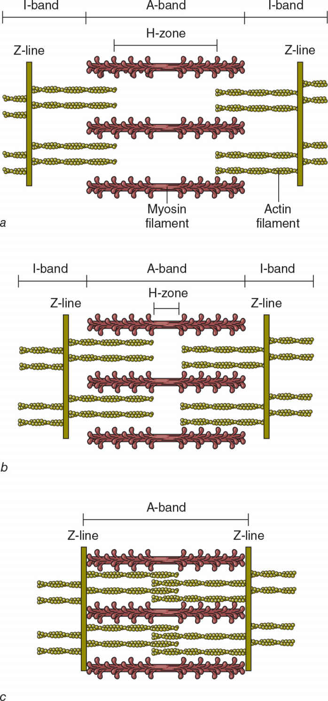
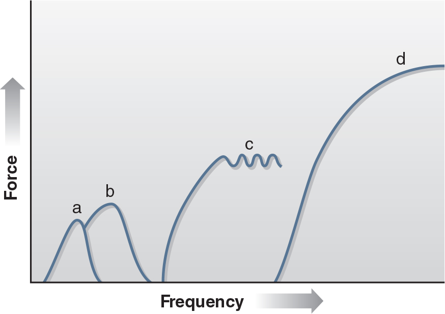
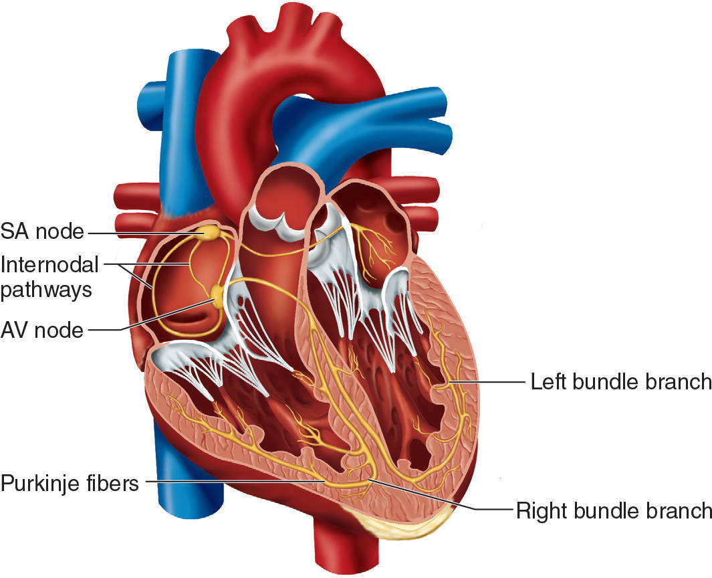

Structural and Functional Foundations of Human Movement(僅供術語對照) | 原文頁碼 p38–p103
一切力量都來自肌纖維內橫橋(肌動蛋白與肌球蛋白的結合體)的微觀循環,一切運動表現都由心肺的輸氧能力支撐。本章把肌肉骨骼、神經肌肉、心血管、呼吸四大系統的結構與生理數字一次講清,這些數字正是 CSCS 出題的原材料。
肌肉只能拉,不能推。收縮的肌肉牽動骨骼,關節就是槓桿的轉軸。人體約有 206 塊骨,數量因人而異。骨骼分為兩大部分:中軸骨骼(顱骨、脊柱、肋骨、胸骨)與四肢骨骼(肩胛帶、上肢、骨盆帶、下肢)。附著其上的骨骼肌(skeletal muscle)超過 430 塊。
按活動度,關節分三類:纖維關節(如顱骨縫合)幾乎不動;軟骨關節(如椎間盤)允許有限活動;滑膜關節(如肘、膝)摩擦小、活動範圍大,人體的運動與鍛鍊動作主要由它完成。滑膜關節的骨端覆蓋透明軟骨,整個關節包在滑膜囊內,囊中有滑液,還常有韌帶等支撐結構。
按旋轉軸數量又分三類:單軸關節(如肘)像鉸鏈只繞一個軸;雙軸關節(如踝、腕)繞兩個互相垂直的軸;多軸的球窩關節(如肩、髖)可繞三個軸運動。考試常考一點:題目常把膝關節歸為鉸鏈關節,但它在整個活動範圍內轉軸會變化,並非純鉸鏈。脊柱由 7 節頸椎、12 節胸椎、5 節腰椎、5 節融合骶椎與 3 至 5 節尾椎組成。
骨不是無生命的材料。阻力訓練與爆發衝擊性運動都能提高骨密度與骨礦物質含量,從事體操等高衝擊專項的人骨密度往往最高。但骨的適應比骨骼肌慢,漸進式超負荷必須長期堅持纔有效。
每塊骨骼肌由肌纖維、結締組織、神經與血管構成。三層結締組織由外而內層層包裹:肌外膜(epimysium)包圍整塊肌肉,肌束膜(perimysium)包圍每個肌束,肌內膜(endomysium)包圍單根肌纖維。每個肌束最多約含 150 根肌纖維。這三層結締組織都向外延續,連接肌腱,肌腱再附著於骨膜。因此肌細胞內產生的張力,能一路傳遞到肌腱與肌腱附著的骨。四肢肌肉有近端(靠近軀幹)與遠端(遠離軀幹)兩個附著點;軀幹肌肉的兩個附著點則稱上點與下點。
肌纖維就是肌肉細胞,長圓柱形,直徑約 50 至 100 微米,與一根頭髮粗細相當。每根肌細胞只有一個神經肌肉接頭(neuromuscular junction, NMJ),又稱運動終板;但一個運動神經元可以支配數百甚至數千根肌纖維。「一個運動神經元加它支配的全部肌纖維」構成一個運動單元(motor unit),它一旦興奮,所支配的全部肌纖維同時收縮。需要精準控制的肌肉(如眼肌)運動單元可以小到只有 1 根纖維;股四頭肌的單元動輒數百根纖維,控制精度就粗。
一根肌纖維的肌漿內有數百條肌原纖維,直徑約 1 微米,約為頭髮的百分之一。肌原纖維由兩種肌絲組成。粗絲是肌球蛋白(myosin),直徑約 16 奈米,每條由多達 200 個肌球蛋白分子聚集而成;每個分子含兩條重鏈、四條輕鏈,並帶兩個可擺動的「頭」。細絲是肌動蛋白(actin),直徑約 6 奈米,由兩條鏈捲成雙螺旋。每條粗絲周圍環繞 6 條細絲,每條細絲周圍也有 3 條粗絲,排列如晶格般整齊,保證收縮高效有序。
兩條 Z 線之間的段落是肌小節(sarcomere),為骨骼肌最小的收縮單位。肌小節靜息時平均約 2.5 微米,每釐米肌肉約有 4500 個。粗絲錨定在肌小節中心的 M 線,細絲錨定在 Z 線。顯微鏡下的明暗紋路有對應關係:深色 A 帶對應肌球蛋白絲所在區域,淺色 I 帶只含相鄰肌小節的肌動蛋白絲(Z 線位於 I 帶中央),肌小節中心只含粗絲的部分是 H 區。
1954 年,Huxley 與 Hanson 提出肌絲滑行理論(sliding filament theory):細絲沿粗絲向內滑動,把 Z 線拉向肌小節中心,肌纖維因此變短。關鍵在「滑動」兩個字:粗絲與細絲自身的長度都不變,變短的是 I 帶與 H 區。肌肉發出的力量,與當時形成的橫橋(cross-bridge)數量成正比。肌肉被拉得太長,粗細重疊少,橫橋難形成,力量最低;肌肉過度縮短時,重疊過多反而互相干擾,力量也低;只有重疊適度時力量最高。這正是考題中「長度-張力關係」的原型。
肌肉收縮必需兩樣東西:鈣與 ATP。運動神經元興奮肌纖維後,儲存鈣離子的肌漿網(sarcoplasmic reticulum, SR)釋放鈣離子;鈣與細絲上的肌鈣蛋白(troponin)結合,讓原肌球蛋白(tropomyosin)移位,暴露出肌動蛋白上的肌球蛋白結合位,橫橋才能形成。肌球蛋白頭部的 ATP 酶水解三磷酸腺苷(adenosine triphosphate, ATP),驅動「動力衝程」把細絲拉向肌小節中心。刺激停止後,專用運輸蛋白消耗 ATP,把鈣泵回肌漿網,橫橋數量驟減,肌肉放鬆。五個步驟見圖 1.2。
動作電位(action potential)沿運動神經元傳到軸突末梢,但它不直接接觸肌纖維,而是促使神經肌肉接頭釋放乙醯膽鹼(acetylcholine, ACh)。ACh 與肌膜上的受體結合;足夠多的受體啟動後,肌膜產生自己的動作電位,再沿橫管傳遍纖維內部,觸發整個肌漿網同步釋鈣,全細胞協調收縮。
一個運動單元要嘛整體收縮、要嘛整體休息,沒有「只收一半纖維」或「一根纖維收一半力」這回事,這叫全或無原理(all-or-none principle)。一次動作電位只引發一次抽搐(twitch),持續幾毫秒,力很小,因為細胞很快把鈣收回肌漿網、纖維隨即放鬆。在前一次抽搐未完全放鬆前再次刺激,兩次的力會疊加;再提高放電頻率,先出現非融合強直收縮,再出現融合強直收縮(fused tetanus)。融合強直時產生的最大強直力,就是這個運動單元的出力上限。
整塊肌肉要調節力量,只有兩個旋鈕。一是放電頻率:抽動力疊加後,單元出力大增,這條途徑對手部小肌肉特別重要。二是動員(recruitment):啟用更多運動單元。大腿等大肌羣接近最大出力時,多數單元必須以較高頻率放電。動員順序遵循大小原則:先低閾值的 I 型單元,再高閾值的 II 型單元。肌電圖估計,大強度舉重時接近最大的自主收縮可激活約 90% 以上可用運動單元;但未經訓練者常激活不足,快肌單元的放電頻率也常不足以輸出最大力。
依肌球蛋白 ATP 酶組織化學染色,肌纖維分為 I 型(慢縮)與 IIa、IIx 型(快縮),收縮與放鬆速度一慢兩快。I 型的粒線體密度高且在肌原纖維間分佈均勻,與毛細血管接觸多、肌紅蛋白多,所以氧氣供應與有氧產能充足,最抗疲勞;但直徑小、每個細胞的肌原纖維少、肌球蛋白 ATP 酶反應速率低,橫橋循環慢,所以整體力量小、力量發展速率低。IIx 正相反:直徑最大、無氧酶多、最容易疲勞,力量與功率輸出最高。IIa 型介於兩者之間。一個運動單元內支配的肌纖維在代謝與功能上彼此相似,所以「慢運動單元、快運動單元」的說法與肌纖維類型一一對應。比目魚肌這類姿勢肌以 I 型為主;股四頭肌這類大肌羣則兩型混有,慢跑與衝刺都由它完成。2021 年利用先進分子方法的研究還顯示,三種肌纖維中數百種結構蛋白與代謝蛋白的含量都不相同。完整對照見表 3.1。
哪種肌纖維上場,取決於活動在單位時間內產生的生理需求。慢速長跑需求低而持續,以 I 型為主;終點衝刺需求陡增,需額外動員快肌;高翻這類極短時間近最大收縮,幾乎動員相關肌肉的多數運動單元,II 型貢獻顯著。見表 3.2。
| 特徵 | I 型 | IIa 型 | IIx 型 |
|---|---|---|---|
| 運動神經元大小 / 動員閾值 | 小 / 低 | 大 / 中至高 | 大 / 高 |
| 收縮速度與放鬆速度 | 慢 | 快 | 快 |
| 抗疲勞能力與耐力 | 高 | 中 | 低 |
| 力量產生 | 中 | 高 | 高 |
| 功率輸出 | 低 | 中至高 | 高 |
| 需氧(有氧)酶含量 | 高 | 中 | 低 |
| 無氧(醣解)酶含量 | 低 | 中至高 | 高 |
| 肌漿網複雜程度 | 低 | 中至高 | 高 |
| 毛細血管密度 / 肌紅蛋白含量 | 高 / 高 | 中 / 低 | 低 / 低 |
| 粒線體大小與密度 | 高 | 中 | 低 |
| 纖維直徑 / 顏色 | 小 / 紅 | 中 / 紅白 | 大 / 白 |
表 3.1 肌纖維主要特徵對照(依原文表 1.1 與課文敘事整理)
| 活動特性 | 主導的運動單元 | 代表項目 |
|---|---|---|
| 長時間、強度平穩偏低 | I 型(慢縮)為主 | 馬拉松、長距離單車、越野滑雪 |
| 極短時間近最大收縮 | 多數運動單元參與動員,II 型(快縮)貢獻大 | 100 米、奧林匹克舉重、高翻、投擲 |
| 間歇性高低起伏 | I 型支撐平穩段,II 型應付間歇衝刺,兩型都用 | 足球、籃球、美式橄欖球、摔角、划船、網球、速度滑冰 |
表 3.2 活動類型與肌纖維相對參與(依原文表 1.2 的判定邏輯整理)
本體感受器分佈在關節、肌肉與肌腱中,對壓力與張力敏感,把肌肉的動態資訊傳入中樞神經,送達意識與潛意識兩個層面。大腦靠它們形成「運動覺」,知道身體各部位相對重力的位置;多數資訊由潛意識處理,你不用刻意去想就能維持姿勢。
肌梭(muscle spindle)由結締組織鞘包埋的多根梭內肌纖維構成,與普通的梭外肌纖維並聯。它監測肌肉長度與長度變化速率。肌肉被拉長時,肌梭變形放電。衝動傳到脊髓,與支配同一塊肌肉的運動神經元形成突觸,引發這塊肌肉收縮。膝跳反射就是這個迴路:敲擊髕骨下方肌腱拉長肌梭,梭外纖維反射性收縮;纖維縮短後肌梭停止放電,反射自動結束。執行精細動作的肌肉單位質量內肌梭密度高,這保證了收縮的精密控制。
高爾基腱器官(Golgi tendon organ, GTO)位於肌腱靠近肌肉的一端,與梭外肌纖維串聯,監測張力:肌肉與肌腱張力越大,放電越頻繁。它的感覺神經元經脊髓裡的抑制性中間神經元,壓制支配同一肌肉的運動神經元,讓張力回落,防止過大張力造成損傷。低負荷下 GTO 作用微乎其微;極重負荷時它介導的反射性抑制會削弱肌肉出力;運動皮層克服這種抑制的能力,可能就是高強度阻力訓練的基本適應機制之一。
心臟是兩個串聯又各自獨立的泵:右半把血打入肺,左半把血打向全身。心房把血液送給心室,心室纔是肺循環與外周循環的動力源。瓣膜只靠壓力差被動開閉,自己不做功:三尖瓣與二尖瓣統稱房室瓣,在心室收縮期防止血液倒流回心房;主動脈瓣與肺動脈瓣統稱半月瓣,在心室舒張期防止動脈血倒流回心室。
心臟自帶節拍器。竇房結(sinoatrial node, SA 結)是固有起搏點,自律放電每分鐘 60 至 80 次,衝動經結間通路傳到房室結(atrioventricular node, AV 結,自律頻率每分鐘 40 至 60 次)。房室結故意「卡一下」再放行,讓心房先收縮排空,心室才開始收縮;之後衝動經房室束、左右束支與浦肯野纖維快速傳遍心室,兩心室幾乎同時收縮。心室纖維的自律頻率只有每分鐘 15 至 40 次,但 SA 結每次都搶先激發它們,輪不到心室纖維自主放電。延髓心血管中樞經自主神經調速:交感神經加快竇房結去極化(變時作用),心率上升;副交感神經降低放電頻率,心率下降。心房受交感與副交感雙重支配,心室幾乎只有交感纖維。
靜息心率正常範圍為每分鐘 60 至 100 次;低於 60 稱心搏過緩(bradycardia),高於 100 稱心搏過速(tachycardia)。在體表記錄心臟的電活動,即為心電圖(electrocardiogram, ECG):P 波對應心房去極化並引發心房收縮,QRS 波羣對應心室去極化並引發心室收縮,T 波對應心室復極化;心房復極化的波形落在心室去極化期間,QRS 波羣隨之將其掩蓋。去極化指膜電位反轉:膜內由負變略正,膜外變略負。
血管是封閉管路。動脈壁厚而韌,以承受高壓;小動脈是控制毛細血管血流量的「水閘」,可完全閉合或擴張數倍;毛細血管壁薄,便於與組織液交換氧、營養、電解質與激素;靜脈壓力低、管壁薄,但容積可大幅變化,起儲血作用;腿部靜脈內有單向瓣。肌肉收縮擠壓靜脈、瓣膜防止逆流,把血一路送回心臟,這就是骨骼肌泵,久坐時起身活動能促進血液迴流,道理就在於此。血漿攜氧能力低,氧運輸靠紅血球裡的血紅素(hemoglobin),它同時是重要的酸鹼緩衝劑;紅血球還含大量碳酸酐酶,催化二氧化碳與水的反應,幫助排出二氧化碳。
空氣經鼻腔時得到加溫、濕潤與過濾,再沿氣管、支氣管、細支氣管下行;氣管計為第一級,左右主支氣管為第二級,空氣到達進行氣體交換的肺泡前約要經過 23 級氣道。平靜呼吸幾乎全由膈肌完成:膈肌收縮在胸腔造出負壓,空氣流入;膈肌放鬆時,肺、胸壁與腹腔結構彈性回縮,空氣排出。深呼吸與用力呼吸才動用其他肌肉:抬高胸廓的吸氣肌包括肋間外肌、胸鎖乳突肌、前鋸肌與斜角肌;呼氣肌是腹直肌、腹外斜肌、腹內斜肌、腹橫肌與肋間內肌,用力呼氣時,腹肌把腹腔向上推,擠壓膈肌。
呼吸本身耗能:正常靜息呼吸佔人體總能量消耗的 3% 至 5%;劇烈運動時肺通氣耗能可升到 8% 至 15%,氣道阻力升高(如運動型氣喘)時更喫緊。氣體交換靠擴散:分子憑自身動能隨機運動,淨方向從高濃度、高分壓側流向低側。靜息時肺泡內氧分壓比肺毛細血管內約高 60 mmHg,氧擴散入血,二氧化碳反向擴散,過程幾乎瞬時完成。
每次吸氣約有 150 毫升空氣停在鼻腔、氣管、支氣管等不交換氣體的氣道裡,這叫解剖死腔(anatomical dead space);它隨年齡增長而變大,深呼吸時氣道擴張也會讓它略增,但深呼吸帶進的新鮮空氣遠多於死腔的增加量,所以加深呼吸比加快呼吸更能提高肺泡通氣效率。潮氣量中約 350 毫升真正進入肺泡,參與氣體交換。肺泡因血流不暢、通氣不良而無效通氣的部分是生理死腔(physiological dead space),健康人幾乎可忽略;慢性阻塞性肺病可讓它擴大到解剖死腔的 10 倍。氧運輸:每升血漿只能溶解約 3 毫升氧,絕大部分氧由血紅素攜帶,男性約 15 至 16 克/100 毫升血、女性約 14 克;1 克血紅素可攜 1.34 毫升氧,男性每 100 毫升血攜氧能力約 20 毫升。二氧化碳清除:約 5% 溶於血漿,主要途徑(約 70%)是在碳酸酐酶催化下與水結合、以碳酸氫根離子形式運到肺;釋放出的氫離子由血紅素緩衝,血漿氯離子移入紅血球補位。
心輸出量(cardiac output, Q)= 每搏輸出量(stroke volume, SV)× 心率。靜息約每分鐘 5 升,最大強度可增至靜息的約 4 倍、達每分鐘 20 至 22 升。SV 從運動開始就上升,到約 40% 至 50% 最大攝氧量時趨於平穩。久坐男大學生最大 SV 平均約每搏 100 至 120 毫升,訓練後可達每搏 150 至 160 毫升;女性因平均體型與心肌較小,最大 SV 約比男性低 25%,訓練後約每搏 100 至 110 毫升。
SV 受兩方面調節:一是舒張末期容積(end-diastolic volume, EDV),二是兒茶酚胺(腎上腺素與去甲腎上腺素)增強心室收縮力。運動時,靜脈收縮,骨骼肌泵與呼吸泵(呼吸頻率與潮氣量增加)共同推高靜脈迴流。EDV 增大將心肌纖維拉得更長,收縮因此更猛,收縮期排空更充分。這叫弗蘭克-斯塔林機制(Frank-Starling mechanism),特徵是射血分數(ejection fraction,射出量佔舒張末期容積的比例)上升。運動開始前,心率已出現預期性升高;運動中隨強度線性上升。預估最大心率 = 220 減年齡,標準差 ±10 至 12 次;薈萃分析顯示用 208 減 0.7 乘年齡預測健康成人更準。
最大攝氧量(maximal oxygen uptake, VO₂max)是人體細胞能利用的最大氧量,與有氧運動能力高度相關,是公認的心肺適能金標準;它主要取決於心臟與循環系統輸氧能力,也受肌纖維類型、粒線體密度、肌肉毛細血管密度影響。靜息攝氧量約每公斤體重每分鐘 3.5 毫升,即 1 代謝當量(metabolic equivalent, MET);健康成人 VO₂max 一般在每公斤每分鐘 25 至 80 毫升之間,即 7.1 至 22.9 METs。攝氧量遵循菲克方程(Fick equation):攝氧量 = 心輸出量 × 動靜脈氧差;教材例題:72 次/分 × 65 毫升/搏 × 6 毫升氧/100 毫升血 = 281 毫升/分,再除以體重 80 公斤,得每公斤每分鐘 3.5 毫升。
血壓:動脈壓隨心臟搏動波動,靜息約收縮壓 120 / 舒張壓 80 mmHg,正常靜息範圍收縮壓 110 至 139、舒張壓 60 至 89;血壓沿體循環逐段下降,到腔靜脈末端接近 0。最大強度有氧運動時收縮壓常升至 220 至 260 mmHg,舒張壓保持不變或略降(血管舒張使外周阻力下降)。平均動脈壓 = (收縮壓 − 舒張壓) ÷ 3 + 舒張壓,注意它不等於兩者平均。心率血壓乘積(rate-pressure product,雙重乘積)= 心率 × 收縮壓,用來估算心肌做功與耗氧。血流再分配:靜息時 15% 至 20% 的心輸出量分配給骨骼肌,劇烈運動時可高達約 90%。呼吸端同步放大:呼吸頻率從靜息每分鐘 12 至 15 次增至 35 至 45 次,潮氣量從 0.4 至 1 升增至 3 升以上,每分鐘通氣量可達靜息的 15 至 25 倍、即每分鐘 90 至 150 升。低至中等強度時通氣量增加主要靠潮氣量,通氣當量(每分鐘通氣量/攝氧量)約每消耗 1 升氧用 20 至 25 升空氣;強度再升高(未受訓者約 45% 至 65% VO₂max、受訓運動員約 70% 至 90%)時,呼吸頻率的貢獻轉大,通氣量增幅遠超攝氧量增幅,與血乳酸急升同步,通氣當量可升到 35 至 40。
阻力訓練讓心血管指標短時急遽升高。在高強度(95% 1RM)腿舉中,文獻報導血壓峯值可達 320/250 mmHg,心率可達每分鐘 170 次。血壓反應隨主動肌肉量增加呈非線性上升,在同一動作的向心階段高於離心階段,在動作「黏滯點」最高。運動中胸內壓升高,血漿容量可減少達 22%。現有資料未顯示阻力訓練對靜息血壓有不良影響。
阻力訓練時的血液動力反應有個「延遲」特徵。組內做瓦氏動作(憋氣發力),會推高胸內壓與腹內壓,限制靜脈迴流、降低舒張末期容積,SV 與 Q 主要在每次重複的離心階段增加;心輸出量反而在組間休息時升得更多,完成一組後前 5 秒內的心率比組內還高。低阻力多次數的反應則接近有氧運動。肌肉局部血流另有機制:收縮的肌肉壓迫微血管,強度超過最大自主收縮的約 20% 時就在組內阻斷外周血流,休息期再出現反應性充血(reactive hyperemia)。高負荷期血流減少、氫離子堆積、pH 下降,這些代謝壓力正是肌肥大的強烈刺激。急性反應幅度取決於強度、持續時間、參與肌肉量、休息時間與收縮速度。
呼吸端:阻力訓練每組期間通氣量顯著升高,休息期第一分鐘升得更多,每分鐘通氣量可超過 60 升;休息間隔越短(30 秒至 1 分鐘)升高越顯著。訓練適應表現為最大運動時潮氣量與呼吸頻率增加,次最大運動時呼吸頻率下降、潮氣量上升;訓練者通氣當量(通氣量/攝氧量)較低,通氣效率更高。
| 中文術語 | English | 一句話定義 |
|---|---|---|
| 運動單元 | motor unit | 一個運動神經元及其支配的全部肌纖維,興奮時整體收縮。 |
| 神經肌肉接頭 | neuromuscular junction (NMJ) | 運動神經元與肌纖維的連接處,經神經遞質傳遞信號。 |
| 乙醯膽鹼 | acetylcholine (ACh) | 神經肌肉接頭釋放、啟動肌膜動作電位的興奮性神經遞質。 |
| 肌小節 | sarcomere | 相鄰兩條 Z 線之間的段落,骨骼肌最小收縮單位。 |
| 肌絲滑行理論 | sliding filament theory | 細絲沿粗絲滑動使肌小節與肌纖維變短的收縮機制。 |
| 橫橋 | cross-bridge | 肌球蛋白頭部與肌動蛋白結合形成的複合體,數量決定力量。 |
| 動力衝程 | power stroke | 肌球蛋白頭部旋轉、把細絲拉向肌小節中心的機械動作。 |
| 全或無原理 | all-or-none principle | 運動單元一旦激活,其所屬全部肌纖維同時激活收縮。 |
| 強直收縮 | tetanus | 高頻刺激使抽搐融合形成的持續收縮,分非融合與融合兩級。 |
| 肌漿網 | sarcoplasmic reticulum (SR) | 肌細胞內儲存與釋放鈣離子的特異內質網系統。 |
| 肌梭 | muscle spindle | 與肌纖維並聯的本體感受器,監測長度及其變化速率,促進收縮。 |
| 高爾基腱器官 | Golgi tendon organ (GTO) | 與肌纖維串聯於肌腱的本體感受器,監測張力,抑制收縮。 |
| I 型肌纖維 | type I muscle fiber | 收縮慢、抗疲勞、有氧能力強的慢肌纖維。 |
| IIa 型肌纖維 | type IIa muscle fiber | 收縮快、抗疲勞中等的中間型快肌纖維。 |
| IIx 型肌纖維 | type IIx muscle fiber | 收縮最快最有力、最易疲勞的醣解型快肌纖維。 |
| 心輸出量 | cardiac output (Q) | 每分鐘心臟泵出的血量 = 心率 × 每搏輸出量。 |
| 每搏輸出量 | stroke volume (SV) | 一次心搏射出的血量。 |
| 舒張末期容積 | end-diastolic volume (EDV) | 舒張充盈結束時心室可供泵出的血量。 |
| 射血分數 | ejection fraction | 一次收縮射出量佔舒張末期容積的比例。 |
| 弗蘭克-斯塔林機制 | Frank-Starling mechanism | 心肌纖維拉伸得越長,收縮力量越強。 |
| 心率血壓乘積 | rate-pressure product (double product) | 心率 × 收縮壓,用以估算心肌耗氧。 |
| 最大攝氧量 | maximal oxygen uptake (VO₂max) | 細胞能利用的最大氧量,公認心肺適能金標準。 |
| 菲克方程 | Fick equation | 攝氧量 = 心輸出量 × 動靜脈氧差。 |
| 潮氣量 | tidal volume | 每次呼吸吸進或呼出的空氣量。 |
| 解剖死腔 | anatomical dead space | 傳氣但不交換的氣道容積,約 150 毫升。 |
| 生理死腔 | physiological dead space | 通氣但交換受損的肺泡部分,健康人幾乎可忽略。 |
| 心電圖 | electrocardiogram (ECG) | 體表記錄的心電活動,P 波與 QRS 為去極化、T 波為復極化。 |
| 反應性充血 | reactive hyperemia | 收縮壓閉血流後,休息期血流量補償性增加。 |



| 指標 | 靜息 | 劇烈/最大有氧運動 | 備註 |
|---|---|---|---|
| 心率 | 60 至 100 次/分 | 接近 220 減年齡 | 隨強度線性上升,運動前已預期性加快 |
| 心輸出量 | 約 5 升/分 | 20 至 22 升/分(約 4 倍) | = 心率 × 每搏輸出量 |
| 每搏輸出量 | — | 升至 40%~50% VO₂max 後平穩 | 久坐男 100 至 120、訓練男 150 至 160、訓練女 100 至 110 毫升/搏 |
| 收縮壓 / 舒張壓 | 約 120 / 80 mmHg | 220 至 260 / 不變或略降 | 舒張壓反映外周阻力,血管舒張使其下降 |
| 骨骼肌血流佔心輸出量 | 15% 至 20% | 可達約 90% | 其他器官小動脈收縮,肌肉小動脈擴張 |
| 呼吸頻率 | 12 至 15 次/分 | 35 至 45 次/分 | 健康年輕人數據 |
| 潮氣量 | 0.4 至 1 升 | 3 升以上 | 其中約 150 毫升留在解剖死腔 |
| 每分鐘通氣量 | — | 90 至 150 升/分(靜息 15 至 25 倍) | 通氣當量 20 至 25,劇烈時升至 35 至 40 |
| 通氣耗能佔比 | 3% 至 5% | 8% 至 15% | 氣道阻力高(如運動型氣喘)時更耗能 |
表 6.1 靜息與最大有氧運動的心肺指標對照(依原文 p83 至 p90 整理)
| 阻力訓練急性反應 | 關鍵數字與事實 |
|---|---|
| 血壓峯值 | 95% 1RM 腿舉報導達 320/250 mmHg;向心階段高於離心,黏滯點最高 |
| 心率 | 可達 170 次/分;一組結束後前 5 秒高於組內 |
| 每搏輸出量與心輸出量 | 主要在離心階段增加;受憋氣限制靜脈迴流影響,組間休息時升幅更大 |
| 血漿容量 | 運動中可減少多達 22% |
| 肌肉局部血流 | 收縮強度超過約 20% 最大自主收縮即阻斷組內血流,休息期反應性充血 |
| 每分鐘通氣量 | 休息期第一分鐘升幅最大,可超過 60 升;休息 30 秒至 1 分鐘時升高最顯著 |
| 靜息血壓 | 現有資料未顯示阻力訓練對其有不良影響 |
表 6.2 阻力訓練急性心肺反應要數(依原文 p95 至 p97 整理)
Q1.(是非題)依肌絲滑行理論,肌肉收縮時細肌絲本身變短。
Q2.(選擇題)橫橋循環進行時,肌纖維內必需哪兩種物質? (A) 鈉與脂肪酸 (B) 鈣與 ATP (C) ADP 與無機磷酸鹽 (D) 鈣與鐵
Q3.(選擇題)關於運動單元的正確定義? (A) 一根肌纖維及其所有支配神經元 (B) 一個運動神經元及其支配的所有肌纖維 (C) 一個上與一個下運動神經元 (D) 一根肌纖維及其全部肌原纖維
Q4.(選擇題)肌小節收縮時會縮短的是? (A) A 帶 (B) 肌球蛋白絲 (C) I 帶與 H 區 (D) Z 線彼此分離
Q5.(選擇題)I 型肌纖維的特徵是? (A) 纖維直徑大 (B) 肌球蛋白 ATP 酶反應快 (C) 粒線體密度高且分佈均勻 (D) 與毛細血管接觸少
Q6.(是非題)弗蘭克-斯塔林機制指出:在一定範圍內,心肌纖維拉伸得越長,收縮力量越大。
Q7.(選擇題)以 220 減年齡估算,47 歲者的最大心率約為? (A) 160 次/分 (B) 173 次/分 (C) 185 次/分 (D) 200 次/分
Q8.(選擇題)某運動員心率 75 次/分、每搏輸出量 70 毫升、動靜脈氧差 8 毫升/100 毫升血,其攝氧量為? (A) 281 毫升/分 (B) 350 毫升/分 (C) 420 毫升/分 (D) 525 毫升/分
Q9.(選擇題)對最大攝氧量影響最大的因素是? (A) 腿部 I 型纖維比例 (B) 總血容量 (C) 年齡預估最大心率 (D) 心臟與循環系統輸送氧氣的能力
Q10.(選擇題)阻力訓練進行中,不會出現的心血管反應是? (A) 心率下降 (B) 每搏輸出量增加 (C) 心輸出量增加 (D) 血壓升高
先把上一節題目做完,再回頭對照本頁。
1. Q1.(是非題)依肌絲滑行理論,肌肉收縮時細肌絲本身變短。 …
Ans:✕ — 粗細肌絲長度不變,只是彼此滑動,變短的是 I 帶與 H 區。
2. Q2.(選擇題)橫橋循環進行時,肌纖維內必需哪兩種物質? (A) 鈉與脂肪酸 ( …
Ans:B — 鈣暴露結合位、ATP 提供能量,教材原文死規則。
3. Q3.(選擇題)關於運動單元的正確定義? (A) 一根肌纖維及其所有支配神經元 …
Ans:B — 運動單元 = 一個運動神經元 + 其支配的全部肌纖維。
4. Q4.(選擇題)肌小節收縮時會縮短的是? (A) A 帶 (B) 肌球蛋白絲 ( …
Ans:C — 細絲向內滑動,Z 線靠近,I 帶與 H 區縮短。
5. Q5.(選擇題)I 型肌纖維的特徵是? (A) 纖維直徑大 (B) 肌球蛋白 A …
Ans:C — 高密度且分佈均勻的粒線體、充足的毛細血管接觸與肌紅蛋白,是 I 型抗疲勞的結構基礎。
6. Q6.(是非題)弗蘭克-斯塔林機制指出:在一定範圍內,心肌纖維拉伸得越長,收縮力 …
Ans:○ — 迴心血增加舒張末期容積,心肌拉更長、收縮更猛,射血分數上升。
7. Q7.(選擇題)以 220 減年齡估算,47 歲者的最大心率約為? (A) 16 …
Ans:B — 220 − 47 = 173,該估計誤差 ±10 至 12 次(實際約 161 至 185)。
8. Q8.(選擇題)某運動員心率 75 次/分、每搏輸出量 70 毫升、動靜脈氧差 …
Ans:C — 菲克方程:75 × 70 × 8 ÷ 100 = 420 毫升/分。
9. Q9.(選擇題)對最大攝氧量影響最大的因素是? (A) 腿部 I 型纖維比例 ( …
Ans:D — 教材明示輸氧能力是主因,纖維類型與粒線體等只是次要因素。
10. Q10.(選擇題)阻力訓練進行中,不會出現的心血管反應是? (A) 心率下降 ( …
Ans:A — 阻力訓練時心率只升不降,組後前 5 秒還高於組內。